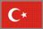
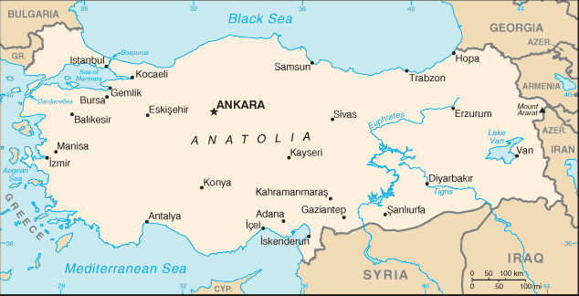

David Bar-Tzur

Flags: World flag database.
Map: Maps.com - "search" for country, then "Digital Map Graphics").
For a quick, interesting resource for facts about this and other countries,
try Mystic Planet - The New Age directory of Planet Earth.